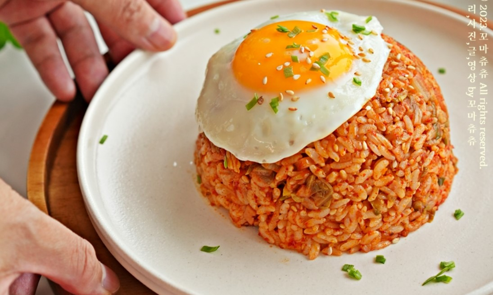

김치볶음밥

김치볶음밥은 한국 요리 중에서도 매우 유명한 요리입니다. 신선한 김치와 밥, 그리고 다양한 재료들을 볶아내어 매콤하고 풍부한 맛을 즐길 수 있는 요리입니다.
준비 시간: 15분
조리 시간: 15분
인원: 2인
재료:
밥 2그릇
김치 1컵
돼지고기 (삼겹살 또는 목살) 100g
양파 1/2개
당근 1/2개
대파 1대
계란 2개
간장 1큰술
참기름 1큰술
김 또는 김가루 약간
조리 방법:
- 돼지고기는 얇게 썰어줍니다.
- 양파와 당근은 작은 크기로 다듬어줍니다.
- 대파는 어슷하게 썰어줍니다.
- 팬에 기름을 두르고 돼지고기를 볶아줍니다.
- 돼지고기가 익으면 양파와 당근을 넣고 볶아줍니다.
- 김치와 밥을 넣고 볶아줍니다.
- 간장과 참기름을 넣고 볶아줍니다.
- 마지막으로 대파를 넣고 볶아줍니다.
- 계란을 푼 후 팬 가장자리에 부어줍니다.
- 계란이 익으면 김 또는 김가루를 뿌려줍니다.
- 그릇에 담아 맛있게 즐깁니다.